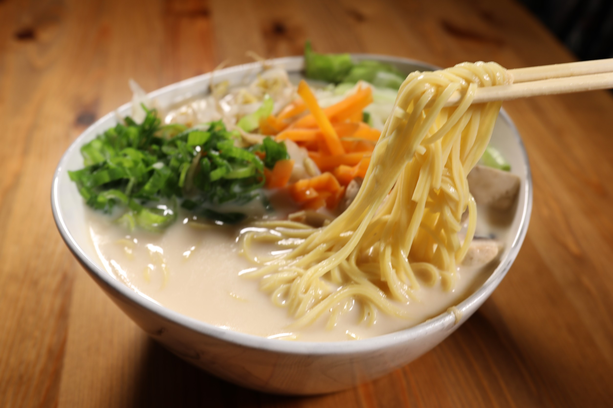
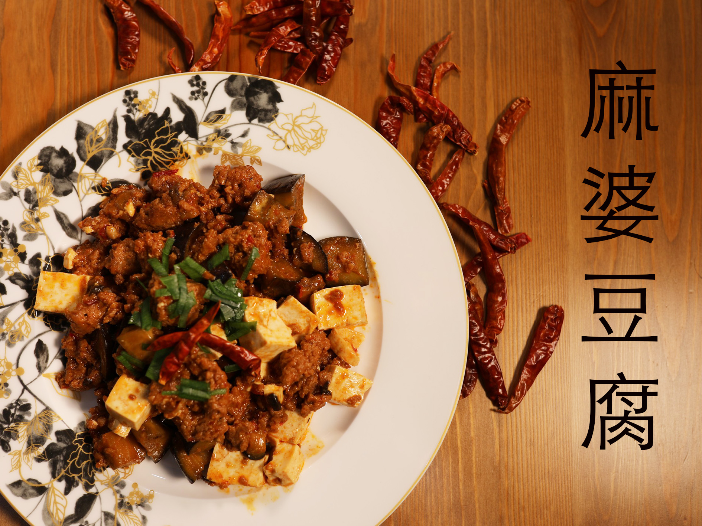
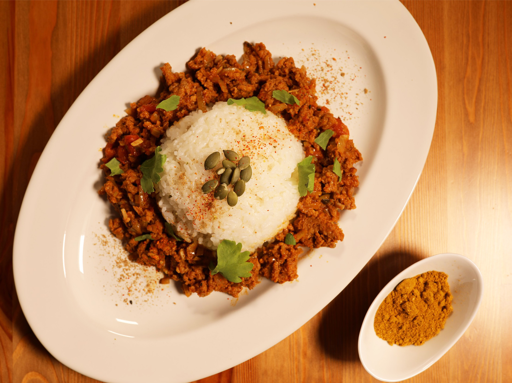
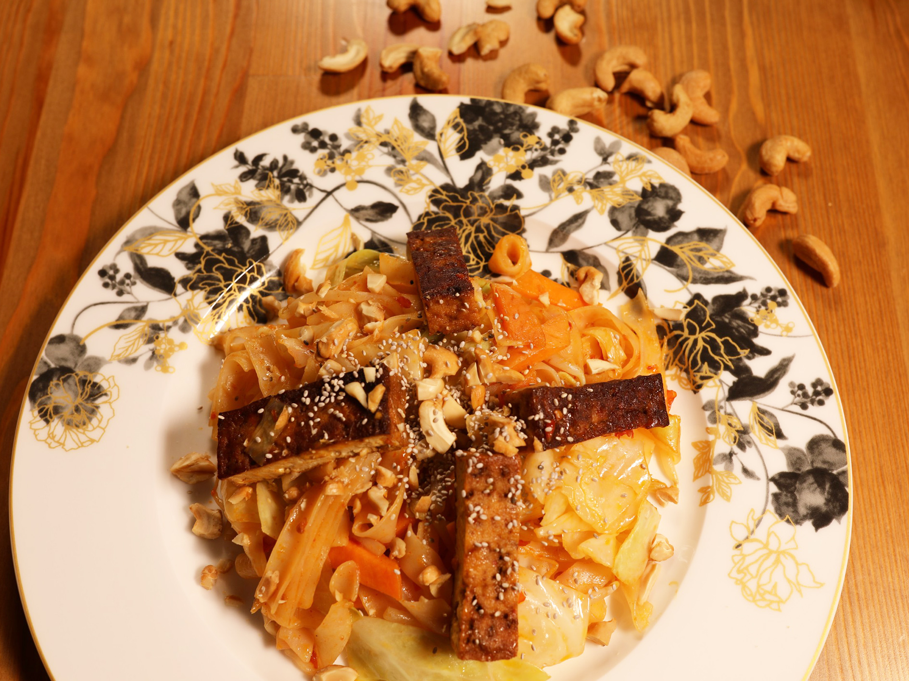
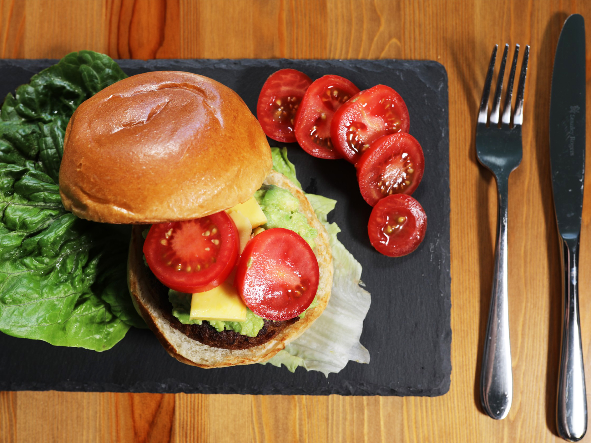
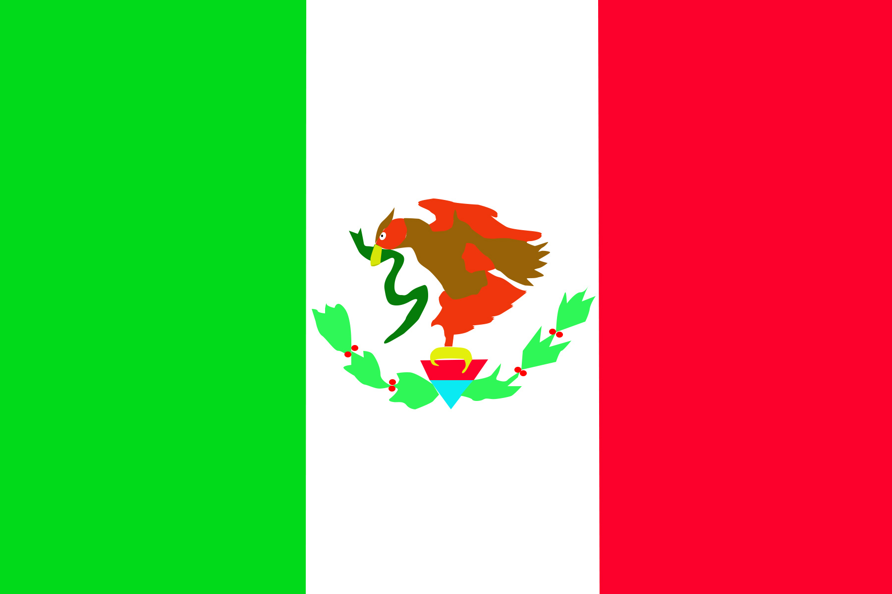
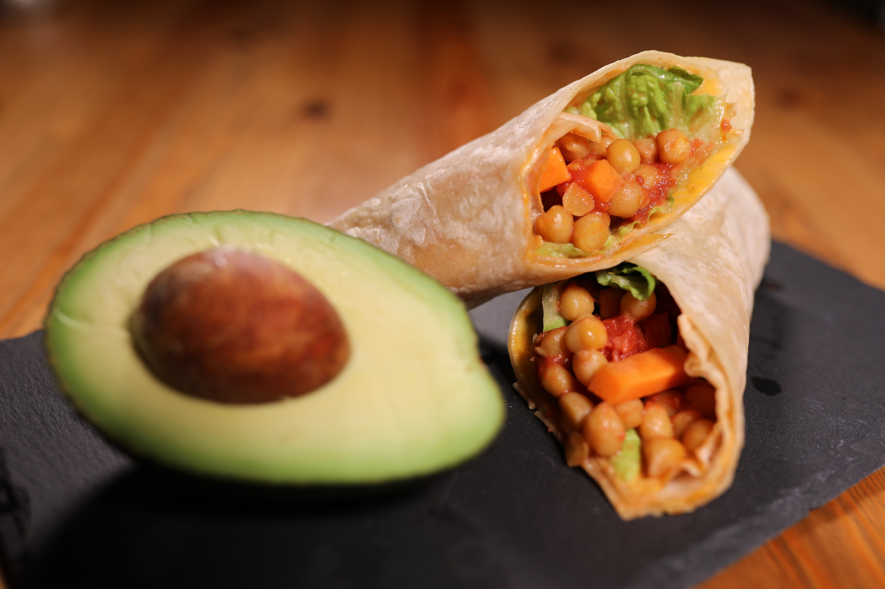

Japan
Miso Soy Milk Ramen
One of famous Japanese food, Ramen. They usually make it taking the
broth out of the pork bones or fish. We don't need them.
We can make it as similar taste using just miso, soy milk and white
kneaded sesame.
China
Mapo Tofu
The signature dish of China is Mapo Tofu.
It will change to be an amazing meal if we change our thinking a little bit.
Soy meat and Tofu gives us high proteins rather than using beef or pork meat.
Never tried it? Yes, you should.
Taste is exactly same as the MEAT.
India
Keema Curry and Rice
Curry ia all suitable for beef, pork and chicken.
Have you ever thought why MEAT is delicious? MEAT does not have a TASTE actually.
We think it's delicious because we use sauce or salt and pepper. That' why.
Soy meat is the best substitution for all meats because IT doesn't have TASTE.
Italy
Tomato sauce spaghetti with vegan cheddar cheese
Oh, it's the best food in the world.
Can you believe that the Cheese is also Vegan? Taste is mild. It's super suitable for pasta.
Cream, tomato and basil sauce, all you can make with plant based.
Afraid of getting fat? No, pasta is a good diet food as long as you don't eat too much.

Thailand
Pad Thai
If you feel hot, eat Pad Thai. The sour taste would make you cooldown.
Meat? Nope.
Did you know? To produce 1kg of beef, it's needed 36000000 litre of water.
How about using the WATER to play swimming?
USA
Vegan burger with vegan cheddar cheese
Beef! Beef! Beef!
When you think of America, the first thing that comes to mind would be meat.
Here is a vegan burger. Why don't you try it?
I bet that you won't even realize that it's soy meat.
Mexico
Tortilla
There is not only soy meat to get proteins.
Beans give us high proteins as well as meats. And it is cheaper. It is budget-friendly.
why not invest in yourself with that extra money?
Feel lighter in body and mind.
